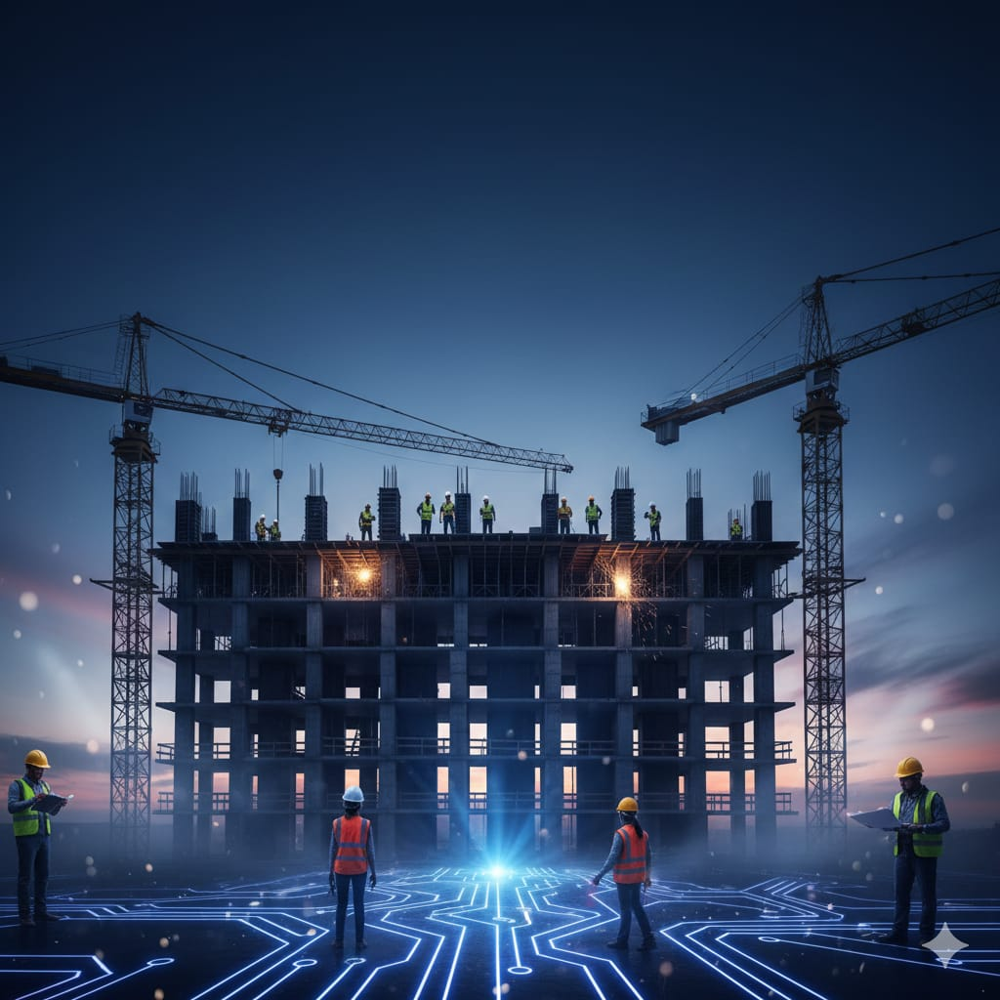
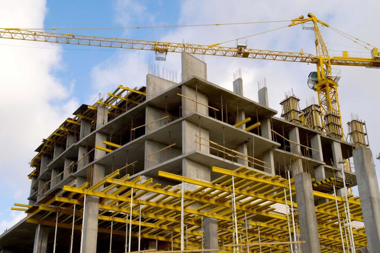
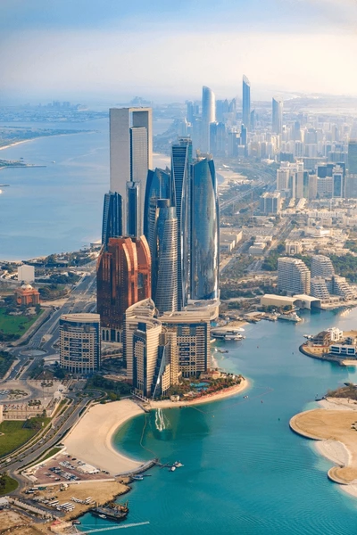
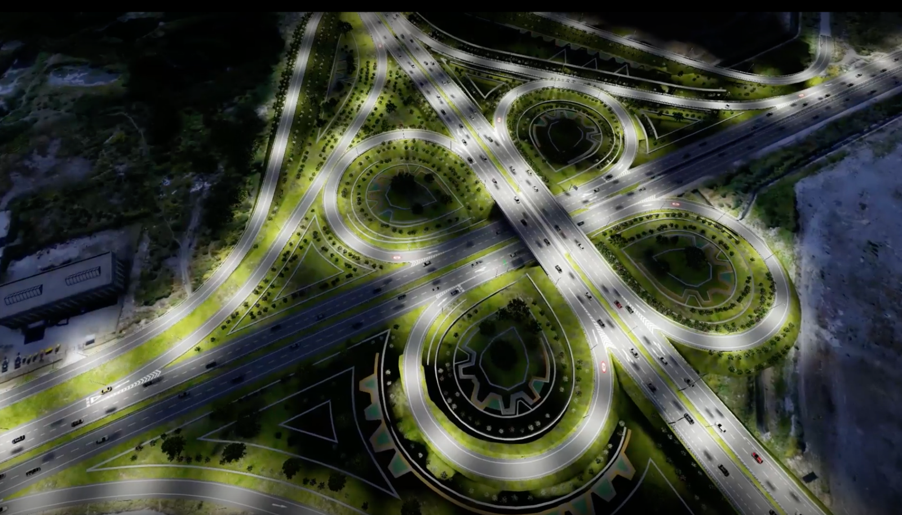

MCR CONSTRUCTORA
Conocenos
Somos una firma especilizada en construccion y desarrollo de proyectos
civiles y redenciales. Ofrecemos soluciones integrales y de alta calidad
desde la concepcion hasta la entrega final de su obra. Nuestro sello es el
compromiso con excelencia, la seguridad y la entrega puntual.
Compromiso y vision
Nos mueve la vision de ser referentes en el sector,liderando con
calidad e innovacionen cada proyecto.Nuestro compromiso
final es contribuir al desarrollo de infraestructura que mejore
la calidadde vida en las comunidades. Masterol & Romero
su proyecto esta en manos de profesionales dedicados a la excelencia.
Profesionalismo
Nuestro equipo esta formado por ingenieros y arquitectos con vasta experiencia
en el sector.Nos enfocamos en la innovacion de procesos y la aplicacion
de practicas de construccion sostenible.
Nos enfocamos en la innovacion de procesos y la aplicacion de practicas de
construccion sostenible . Nuestor objetivo es garantizar resultados duraderos ,
funcionales y que superen las expectativas de nuestros clientes.



Obras imprescindibles
Descubre por que nuestra mano de obra es la mejor
Consejos profesionales
de cada obra
"calidad,seguridad y precision en cada paso"
Profesionales especializados
"Guia profesional para trabajar con calidad"
Las obras mas
destacadas

Edificio Residencial
"Torres del Horizonte"
Proyecto moderno y sostenible que integra
eficiencia energetica y diseño urbano

complejo comercial
“plaza central”
Espacio multifuncional creado para
negocios,gastronomia,eventos ,con
con alto flujo peatonal

Infraestructura vial
puerto Monnt
Obra enfocada en mejorar la movilidad,
seguridad y conexion entre zonas clave de la ciudad